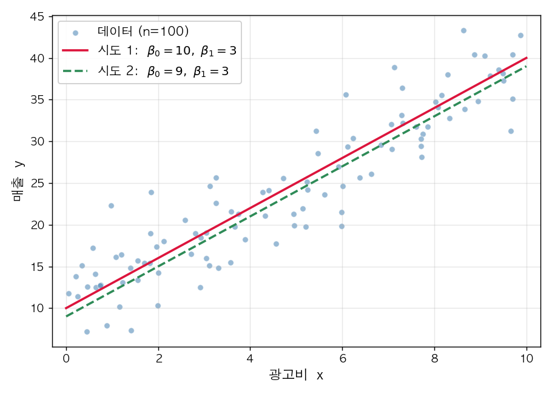
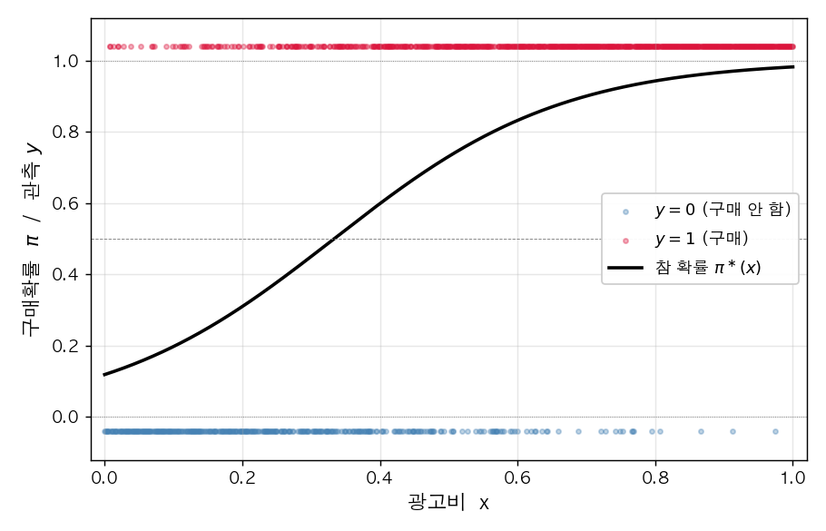
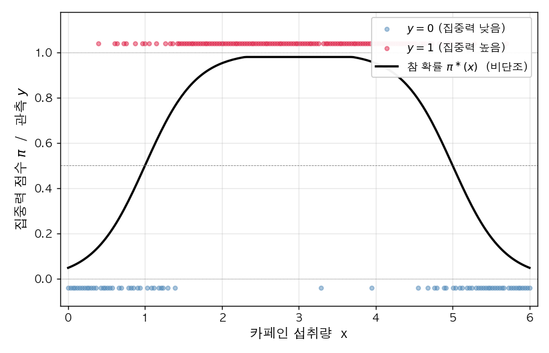
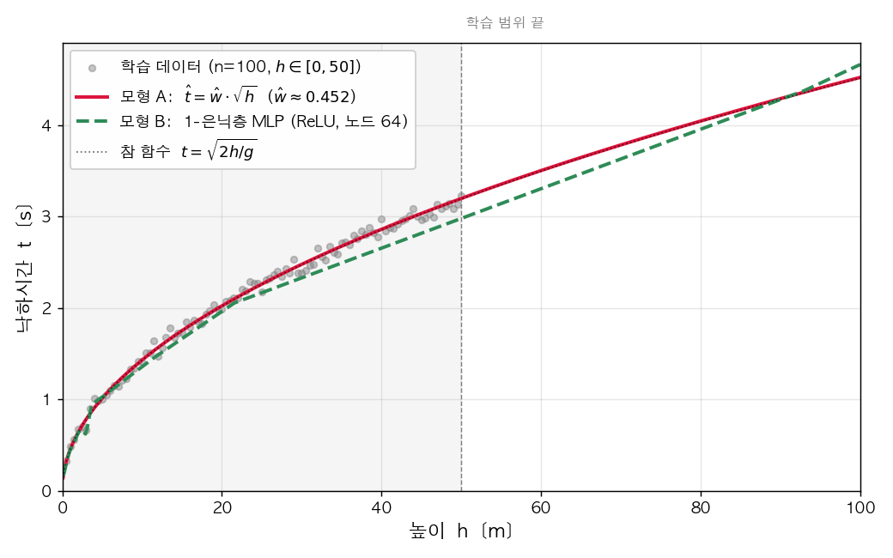

DL2026 중간고사 (2026.05.04)
문제 1. 광고비와 매출
마케팅 회사의 김대리는 (광고비 \(x\), 매출 \(y\)) 자료 100일치를 모았다. 산점도를 그려보니 양의 상관관계가 보였다. 김대리는 본질적인 추세를 추정하여 미래의 매출을 예측하고 싶다.

(1) 김대리는 위 자료가 어떤 통계적 모형에서 생성되었다고 가정하려 한다. 자연스러운 가정은?
① \(y_i \overset{i.i.d.}{\sim} N(0, 1)\)
② \(y_i = w_0^\ast + w_1^\ast x_i\)
③ \(y_i = w_0^\ast + w_1^\ast x_i + \epsilon_i, \quad \epsilon_i \overset{i.i.d.}{\sim} N(0, \sigma^2)\)
④ \(y_i = w_0^\ast / x_i\)
(2) 김대리는 두 후보 직선 시도1 \([\hat w_0, \hat w_1] = [10, 3]\) 와 시도2 \([\hat w_0, \hat w_1] = [9, 3]\) 중 어느 것이 더 좋은지 직관으로 판단하기 어려웠다. 이 비교를 객관화하는 적절한 도구는?
① 데이터를 100일치보다 더 많이 수집해 산점도가 더 빽빽해지면 어느 직선이 더 좋은지 눈으로 구분할 수 있게 된다
② 각 직선에 대해 데이터 점 \((x_i, y_i)\) 와 그 직선이 예측하는 값 \(w_0 + w_1 x_i\) 사이의 차이를 모은 어떤 양, 예를 들어 \[l(w_0, w_1) \;=\; \sum_{i=1}^{n}\big(y_i - w_0 - w_1 x_i\big)^{2}\] 같은 양을 손실함수로 정의하고, 두 직선의 \(l\) 값을 수치적으로 비교한다
③ 후보 직선의 개수를 늘려 시도3, 시도4 등을 추가하고, 새로 추가된 직선들과 시도1, 시도2 를 모두 비교하면 더 좋은 후보가 자연스럽게 드러난다
④ 동전을 던져 앞면이 나오면 시도1, 뒷면이 나오면 시도2 를 데이터에 더 잘 맞는 직선으로 채택한다
(3) 김대리가 (2) 의 ② 에서 정의한 손실함수
\[l(w_0, w_1) \;=\; \sum_{i=1}^{n}\big(y_i - (w_0 + w_1 x_i)\big)^{2}\]
의 값을 두 후보에 대해 직접 계산해 보았더니 \(l(10, 3) < l(9, 3)\) 이었다 (즉 시도1 의 손실이 시도2 의 손실보다 작았다). 이 결과의 해석으로 옳은 것은?
① 시도1 이 시도2 보다 데이터에 더 잘 맞는 직선이다
② 시도2 가 시도1 보다 데이터에 더 잘 맞는 직선이다
③ 두 직선은 데이터에 동일하게 잘 맞는다
④ 손실 \(l\) 값만으로는 두 직선의 적합 정도를 비교할 수 없다
(4) 단순회귀의 손실함수
\[l(w_0, w_1) \;=\; \sum_{i=1}^{n}\big(y_i - (w_0 + w_1 x_i)\big)^{2}\]
에 대한 다음 진술 중, 회귀분석을 경사하강법으로 풀 수 있는 핵심 이유 를 옳게 설명한 것은?
① \(l\) 은 모수 \((w_0, w_1)\) 의 함수로 볼 수 있고 \((w_0, w_1)\) 에 대해 아래로 볼록 (convex) 하므로, 회귀분석은 \(l(w_0, w_1)\) 을 최소화하는 최적화 문제로 환원되어 경사하강법으로 풀 수 있다
② 경사하강법은 오차항이 정규분포를 따르는 회귀 문제에서만 적용할 수 있는데, 주어진 자료에는 그 가정이 깔려 있으므로 경사하강법을 적용할 수 있다
③ 경사하강법은 손실함수가 MSE 일 때만 사용할 수 있는데, \(l\) 자체는 MSE 가 아니지만 \(\frac{1}{n}\, l\) 이 MSE 와 같으므로 경사하강법을 적용할 수 있다
④ 경사하강법은 데이터 개수가 \(n > 30\) 인 경우에만 적용할 수 있는데, 본 문항의 자료는 \(n = 100\) 으로 충분히 크므로 경사하강법을 적용할 수 있다
문제 2. 회귀분석과 PyTorch
이제 김대리가 문제 1 의 회귀분석을 PyTorch 로 직접 구현하고자 한다. 100일치 자료를 길이 100 의 텐서 x, y 에 담은 뒤, 다음 기준 코드 를 작성하여 \((\hat w_0, \hat w_1)\) 을 학습하였다. (코드 내 w0hat, w1hat 이 각각 \(\hat w_0, \hat w_1\) 에 해당한다.)
x = torch.tensor(...) # 길이 100 의 광고비 텐서 (이미 주어졌다고 하자)
y = torch.tensor(...) # 길이 100 의 매출 텐서 (이미 주어졌다고 하자)
w0hat = torch.tensor(0.0, requires_grad=True)
w1hat = torch.tensor(0.0, requires_grad=True)
for epoch in range(30):
yhat = w0hat + w1hat * x
loss = torch.sum((y - yhat)**2)
loss.backward()
w0hat.data = w0hat.data - 0.001 * w0hat.grad
w1hat.data = w1hat.data - 0.001 * w1hat.grad
w0hat.grad = None
w1hat.grad = None다음 (1)~(3) 은 위 기준 코드와 동일한 결과를 내도록 작성한 변형들이다. 각 변형의 빈칸으로 옳은 것을 고르시오.
(1) \({\bf X}, {\bf Y}\) 행렬 만들기. 기준 코드의 텐서 x, y 로부터 디자인 행렬
\[{\bf X}_{100\times 2} \;=\; \begin{bmatrix} 1 & x_1 \\ 1 & x_2 \\ \vdots & \vdots \\ 1 & x_{100} \end{bmatrix}, \qquad {\bf Y}_{100\times 1} \;=\; \begin{bmatrix} y_1 \\ y_2 \\ \vdots \\ y_{100} \end{bmatrix}\]
를 만드는 코드의 빈칸 ⓐ, ⓑ 로 옳은 것은?
X = ⓐ
Y = ⓑ① ⓐ torch.stack([torch.ones(100), x], axis=1), ⓑ y.reshape(-1, 1)
② ⓐ torch.cat([torch.ones(100), x]), ⓑ y
③ ⓐ x.reshape(100, 2), ⓑ y.reshape(1, -1)
④ ⓐ torch.stack([x, torch.ones(100)], axis=0), ⓑ y.T
(2) \({\bf X}, {\bf Y}\) 를 사용한 행렬 형태 학습 코드. 빈칸으로 옳은 것은? (What 은 \(2 \times 1\) 가중치 텐서.)
What = torch.tensor([[0.0], [0.0]], requires_grad=True)
for epoch in range(30):
???
loss = torch.sum((Y - Yhat)**2)
loss.backward()
What.data = What.data - 0.001 * What.grad
What.grad = None① Yhat = X @ What
② Yhat = What @ X
③ Yhat = X * What
④ Yhat = What.T @ X
(3) nn.Linear 를 사용한 변형. 빈칸 ⓐ, ⓑ 로 옳은 것은? (입력은 (1) 의 \({\bf X}\), 출력은 \({\bf Y}\).)
net = ⓐ
loss_fn = torch.nn.MSELoss()
for epoch in range(30):
Yhat = net(X)
loss = loss_fn(Yhat, Y)
loss.backward()
net.weight.data = net.weight.data - 0.1 * net.weight.grad
ⓑ① ⓐ torch.nn.Linear(2, 1, bias=False), ⓑ net.weight.grad = None
② ⓐ torch.nn.Linear(2, 1, bias=True), ⓑ net.weight.grad = None
③ ⓐ torch.nn.Linear(2, 1, bias=False), ⓑ 비움
④ ⓐ torch.nn.Linear(1, 2, bias=False), ⓑ net.weight.grad = None
문제 3. 광고비와 구매여부
이연구원은 (광고비 \(x \in [0, 1]\), 구매여부 \(y \in \{0, 1\}\)) 1000개를 모았다. 자료가 다음 모형에서 생성되었다고 가정한다.
torch.manual_seed(0)
x = torch.linspace(0, 1, 1000)
def sig(u):
return torch.exp(u) / (torch.exp(u) + 1)
piast = sig(-2 + 6 * x)
y = torch.bernoulli(piast)
(1) 위 코드를 수식으로 올바르게 표현한 것은?
① \(\pi_i^\ast = \text{sig}(-2 + 6 x_i), \quad y_i = \pi_i^\ast + \epsilon_i, \quad \epsilon_i \sim N(0, 1)\)
② \(\pi_i^\ast = \text{sig}(-2 + 6 x_i), \quad y_i \sim \text{Bernoulli}(\pi_i^\ast)\)
③ \(\pi_i^\ast = \text{sig}(6 - 2 x_i), \quad y_i \sim \text{Bernoulli}(\pi_i^\ast)\)
④ \(\pi_i^\ast = \text{sig}(-2 + 6 x_i), \quad y_i \sim N(\pi_i^\ast, 1)\)
(2) 이연구원은 위 데이터를 적합하는 네트워크를 다음과 같이 짜려 한다. 빈칸 (가), (나) 로 옳은 것은?
X = x.reshape(-1, 1)
Y = y.reshape(-1, 1)
net = torch.nn.Sequential(
torch.nn.Linear(in_features=(가), out_features=(나)),
torch.nn.Sigmoid()
)① (가) 1, (나) 1
② (가) 2, (나) 1
③ (가) 1, (나) 2
④ (가) 1000, (나) 1
(3) 위 (2) 의 네트워크의 학습 가능한 파라미터의 개수는?
① 1
② 2
③ 3
④ 1000
(4) 위 모형의 학습에 가장 적절한 손실함수는?
① torch.nn.MSELoss()
② torch.nn.BCELoss()
③ torch.nn.CrossEntropyLoss()
④ torch.nn.L1Loss()
(5) 적절한 학습률·옵티마이저로 학습이 잘 끝났다고 하자. net[0].weight, net[0].bias 로 가장 가까운 것은?
① net[0].weight ≈ [[6.0]], net[0].bias ≈ [-2.0]
② net[0].weight ≈ [[-2.0]], net[0].bias ≈ [6.0]
③ net[0].weight ≈ [[0.0]], net[0].bias ≈ [0.0]
④ net[0].weight ≈ [[1.0]], net[0].bias ≈ [1.0]
문제 4. 카페인-집중력
약사 박씨는 (카페인 섭취량 \(x\), 집중력 점수 \(y \in \{0, 1\}\)) 자료를 모았다. 자료를 그려본 결과, 카페인이 늘어나면 집중력이 일정 지점까지 상승하다가 그 후로는 오히려 감소하는 형태였다. 박씨는 처음에 단순 로지스틱 net1 으로 적합을 시도했지만 실패했고, net2 로 바꾸어 성공하였다.

# net1 (실패)
net1 = torch.nn.Sequential(
torch.nn.Linear(1, 1),
torch.nn.Sigmoid()
)
# net2 (성공)
net2 = torch.nn.Sequential(
torch.nn.Linear(1, 2, bias=True),
torch.nn.ReLU(),
torch.nn.Linear(2, 1, bias=True),
torch.nn.Sigmoid()
)(1) net1 이 실패한 가장 큰 이유는?
① 학습률이 너무 작아서
② 시그모이드 전의 값이 직선이라 단조 증가/감소 S 모양만 표현 가능. 증가 후 감소하는 형태 표현 불가
③ BCELoss 대신 MSELoss 를 써야 해서
④ epoch 수가 부족해서
(2) net1 과 net2 의 학습 가능한 파라미터 개수를 비교한 것으로 옳은 것은?
① net1 이 net2 보다 많다
② net2 가 net1 보다 많다
③ 둘이 같다
④ 둘 다 학습 파라미터가 없다
(3) net2 의 각 층에 대한 설명 중 틀린 것은? (입력 텐서의 shape 은 \((n, 1)\) 이라 가정)
① net2[0] 의 출력 shape 은 \((n, 2)\) 이며 학습할 파라미터가 있다
② net2[1] 의 출력 shape 은 \((n, 2)\) 이며 학습할 파라미터가 없다
③ net2[2] 의 입력 shape 은 \((n, 2)\), 출력 shape 은 \((n, 1)\) 이며 학습할 파라미터가 있다
④ net2[3] 의 출력 shape 은 \((n, 1)\) 이며 학습할 파라미터가 있다
(4) net2 의 표현력에 대한 설명 중 틀린 것은?
① 시그모이드 직전이 꺾인 직선이 될 수 있어 net1 보다 표현력이 좋다
② 히든 노드 2개에 ReLU 가 적용되므로 시그모이드 직전이 최대 2번 꺾인 직선을 표현 가능
③ 꺾인 직선만 표현 가능하고 net1 의 단순 S 곡선은 절대 표현 불가능
④ net1 이 표현하는 단순 로지스틱 데이터도 적합 가능
문제 5. 자유낙하 실험
물리학과 최교수는 「떨어진 높이 \(h\) vs 자유낙하 시간 \(t\)」 자료 100개를 모아 길이 100 의 리스트 height, fall_time 에 담았다. 다음 두 모형으로 적합한다.
모형 A (전통적 모델링) — 도메인 지식 (\(t \propto \sqrt{h}\)) 을 활용해 입력에 \(\sqrt{\cdot}\) 변환을 먼저 적용한 뒤 1-층 선형회귀.
X = torch.sqrt(torch.tensor(height)).reshape(-1, 1)
Y = torch.tensor(fall_time).reshape(-1, 1)
net_A = torch.nn.Sequential(
torch.nn.Linear(1, 1, bias=False)
)
# 학습 후 새 입력 h_new 에 대한 예측: net_A(torch.sqrt(torch.tensor([[h_new]])))모형 B (딥러닝식 모델링) — 도메인 지식 없이 \(h\) 를 그대로 입력으로 받는 1-은닉층 MLP.
X = torch.tensor(height).reshape(-1, 1)
Y = torch.tensor(fall_time).reshape(-1, 1)
net_B = torch.nn.Sequential(
torch.nn.Linear(1, 512),
torch.nn.ReLU(),
torch.nn.Linear(512, 1)
)
# 학습 후 새 입력 h_new 에 대한 예측: net_B(torch.tensor([[h_new]]))학습 데이터 범위 안에서는 두 모형이 비슷한 예측을 내놓았다. 그러나 학습 범위 바깥의 큰 \(h\) 에서는 두 모형의 예측이 꽤 다르게 나왔다.

(1) 두 모형의 학습 가능한 파라미터 수를 비교한 것으로 옳은 것은?
① 모형 A 가 모형 B 보다 많다
② 모형 B 가 모형 A 보다 많다
③ 둘이 같다
④ 둘 다 학습 파라미터가 없다
(2) 학습 데이터 범위 안에서 두 모형의 예측이 비슷한 이유로 가장 적절한 것은?
① 두 모형이 정확하게 같은 함수를 학습했기 때문
② 학습 데이터 범위 안에서는 두 모형이 비슷한 출력을 내는 어떤 함수를 각각 찾았기 때문
③ 두 모형이 같은 학습 데이터로 적합되었기 때문
④ Adam optimizer 가 정답을 보장하기 때문
(3) 학습 데이터 범위 바깥의 큰 \(h\) 에서 두 모형의 예측이 다른 이유로 가장 적절한 것은?
① 모형 A 는 \(\sqrt{h}\) 곡선을 그대로 따라가지만, 모형 B 는 ReLU 기반 꺾인 선이라 학습 데이터 끝의 마지막 직선 조각이 그대로 이어지기 때문
② 모형 A 가 잘못 학습됐기 때문
③ 모형 B 가 100% 정확하기 때문
④ 학습 데이터 바깥에서 데이터 잡음이 더 크기 때문
(4) 모형 B 의 은닉층 노드 수를 512 보다 훨씬 더 크게 (예: 5000) 늘리면, 학습 결과에 대한 다음 진술 중 옳은 것은?
① 노드 수가 클수록 학습 데이터에 더 잘 fit 되므로 항상 더 좋은 모형이 된다
② 노드 수가 너무 크면 오버피팅 위험이 커지며, 이를 완화하기 위해 드랍아웃 (Dropout) 같은 정규화 기법을 사용할 수 있다
③ 노드 수는 학습 결과와 무관하다
④ 노드 수가 늘어나면 학습 시간만 늘어날 뿐 표현력은 동일하다
(5) 모형 B 의 활성화함수 (ReLU) 와 다음 Linear 사이에 드랍아웃을 끼워 넣어 학습을 마쳤다.
net_B = torch.nn.Sequential(
torch.nn.Linear(1, 512),
torch.nn.ReLU(),
torch.nn.Dropout(0.8),
torch.nn.Linear(512, 1)
)
# (학습 코드 생략)이제 새 입력 Xnew = torch.tensor([[50.0]]) 에 대한 예측값 Yhat 을 구하려 한다. 가장 옳은 코드는?
①
Yhat = net_B(Xnew)②
net_B.eval()
Yhat = net_B(Xnew)③
net_B.train()
Yhat = net_B(Xnew)④
Yhat = net_B(Xnew)
net_B.eval()문제 6. 16개 진리표
두 입력 \(x_1, x_2 \in \{0, 1\}\) 에 대한 출력 \(y \in \{0, 1\}\) 의 진리표는 모두 \(2^4 = 16\) 가지이다. 다음은 이 16개 진리표 (\(D_1\) ~ \(D_{16}\)) 의 전체 목록이다.
다음과 같이 단순 로지스틱 네트워크를 정의하고, 그 가중치를 \((w_0, w_1, w_2) = (0, 0, 0)\) 으로 설정하였다.
net = torch.nn.Sequential(
torch.nn.Linear(2, 1),
torch.nn.Sigmoid()
)
net[0].bias.data = torch.tensor([0.0]) # w_0 = 0
net[0].weight.data = torch.tensor([[0.0, 0.0]]) # (w_1, w_2) = (0, 0)(1) 위 가중치 설정 \((w_0, w_1, w_2) = (0, 0, 0)\) 에서, 4 개 행 \((x_{1,i}, x_{2,i})\), \(i = 1, 2, 3, 4\) 각각에 대한 네트워크의 출력 \(\hat y_i\) 를 모은 벡터 \(\hat{\bf y} = (\hat y_1, \hat y_2, \hat y_3, \hat y_4)\) 로 가장 적절한 것은?
① \(\hat{\bf y} = (0,\ 0,\ 0,\ 0)\)
② \(\hat{\bf y} = (0.5,\ 0.5,\ 0.5,\ 0.5)\)
③ \(\hat{\bf y} = (1,\ 1,\ 1,\ 1)\)
④ \(\hat{\bf y} = (0,\ 1,\ 1,\ 1)\) (입력 \((0, 0)\) 에서만 \(0\))
(2) 위 네트워크가 입력 벡터 \({\bf x}_1, {\bf x}_2\) 에 대해 계산하는 출력 벡터 \(\hat{\bf y}\) 를 가중치 \((w_0, w_1, w_2)\) 로 표현한 식으로 가장 적절한 것은? (단, \(\text{sig}(z) = \dfrac{e^z}{1 + e^z}\) 는 시그모이드 함수이며, 벡터에 대해서는 성분별로 적용된다.)
① \(\hat{\bf y} = w_0 + w_1 {\bf x}_1 + w_2 {\bf x}_2\)
② \(\hat{\bf y} = \text{sig}(w_0 + w_1 {\bf x}_1 + w_2 {\bf x}_2)\)
③ \(\hat{\bf y} = \text{sig}(w_0) + w_1 {\bf x}_1 + w_2 {\bf x}_2\)
④ \(\hat{\bf y} = w_0 \cdot \text{sig}({\bf x}_1) + w_2 \cdot \text{sig}({\bf x}_2)\)
참고: 이하 (3)~(9) 에서 “적합이 잘 된다” 는 모든 \(i = 1, 2, 3, 4\) 에 대해 \(\hat y_i \approx y_i\) 임을 의미한다.
(3) 위 네트워크의 가중치 \((w_0, w_1, w_2)\) 를 어떻게 조정하더라도 \(\hat y_i \approx y_i\) 가 성립하도록 만들 수 없는 자료 (단순 로지스틱으로 적합 불가능 한 자료) 를 \(D_1 \sim D_{16}\) 중에서 모두 골라 쓰시오.
(답: __________________________________________ )
(4) 가중치 \((w_1, w_2) = (0, 0)\) 은 그대로 둔 채 \(w_0\) 만 매우 큰 양수 로 두었다. 이 설정으로 적합이 잘 되는 자료를 \(D_1 \sim D_{16}\) 중에서 골라 쓰시오.
(답: __________________________________________ )
(5) 가중치 \((w_1, w_2) = (0, 0)\) 은 그대로 둔 채 \(w_0\) 만 매우 큰 음수 로 두었다. 이 설정으로 적합이 잘 되는 자료를 \(D_1 \sim D_{16}\) 중에서 골라 쓰시오.
(답: __________________________________________ )
참고: 이하 (6)~(7) 의 답은 여러 개이지만 그중 하나만 정확히 써도 정답으로 인정한다.
(6) 적합 후 가중치 \(w_1\) 은 양수, \(w_2\) 는 음수 일 것으로 기대되는 자료를 \(D_1 \sim D_{16}\) 중에서 하나 골라 쓰시오.
(답: __________________________________________ )
(7) 적합 후 가중치 \(w_1\) 은 음수, \(w_2\) 는 양수 일 것으로 기대되는 자료를 \(D_1 \sim D_{16}\) 중에서 하나 골라 쓰시오.
(답: __________________________________________ )
문제 7. 베르누이 추정 토론
다음 두 자료를 읽고 물음에 답하라.
위 두 자료를 두고 다음 7명의 학생이 토론하였다.
- 재현: “\(p\) 가 0.2926 로 수렴한 것은 데이터를 만든 진짜 모수 \(p^\ast\) 의 값이 0.2926 이라는 의미야. 우리가 진짜 값을 알아낸 거지.”
- 슬기: “재현이 틀렸어. 수렴값은 진짜 모수 \(p^\ast\) 가 아니라 표본평균
x.mean()과 같은 값이야. 코드에서 두 print 의 출력이 똑같은 것이 그 증거.” - 은희: “코드에서
p.grad = None줄을 빼도 결과는 똑같아. 어차피p.data만 업데이트하는데 grad 가 누적되는 건 결과에 영향이 없어.” - 세민: “자료 2 에서 \(l(p)\) 가 convex 라고 알려줬으니, 초기값을 \(p = 0.5\) 가 아니라 \(p = 0.1\) 로 바꿔도 같은 곳으로 수렴할 거야.”
- 지수: “사실 자료 1 의 코드는, 자료 2 가 이론적으로 미리 풀어 준 결과 \(\hat{p} = \bar x\) 를 파이토치로 한 번 더 수치적으로 확인한 것에 지나지 않아.”
- 도현: “지수의 말이 맞아. 마치 \(f(x) = (x - 2)^2\) 의 최소가 \(x = 2\) 임을 이미 손으로 알고 있으면서도 경사하강법으로 한 번 풀어 보는 것과 같은 상황이지.”
- 윤서: “그렇다면 MLE 를 손으로 깔끔히 풀 수 있는 경우는 자료 2 처럼 수리통계학적으로 푸는 편이 유리하고, 손으로 미분하기 어려운 경우는 자료 1 처럼 손실함수를 정의하고 그 기울기를 따라 모수를 조금씩 갱신하는 경사하강법으로 수치적 최적값을 구하는 게 실무적인 방법이겠네.”
(1) 토론에 등장한 7명의 학생 중 옳은 주장 을 한 학생을 모두 고른 것은?
① 재현, 은희
② 슬기, 세민, 지수, 도현, 윤서
③ 재현, 슬기, 세민, 지수, 도현
④ 재현, 슬기, 은희, 세민, 지수, 도현, 윤서
(2) 자료 1 의 코드에서 변수 p 의 초기값 은?
① \(0\)
② \(0.3\)
③ \(0.5\)
④ \(0.2926\)
(3) 자료 1 의 코드에 사용된 학습률 \(\alpha\) 의 값은?
① \(0.01\)
② \(0.05\)
③ \(0.1\)
④ \(0.5\)
(4) 자료 1 의 코드에서 다른 부분은 그대로 두고 학습률만 \(\alpha = 10^{-6}\) 으로 매우 작게 바꾸어 다시 실행하였다. 50 회 반복 후 p.data 의 값에 대한 진술로 가장 적절한 것은?
① 매 반복의 갱신폭이 너무 작아 50 회 반복으로는 거의 움직이지 못하므로 p.data 는 초기값 \(0.5\) 근처에 머무름
② 학습률을 줄이면 더 정확하게 진짜 모수 \(p^\ast = 0.3\) 으로 수렴함
③ 학습률의 크기에 무관하게 50 회 반복 안에 항상 \(0.2926\) 에 정확히 도달함
④ 학습률이 작을수록 갱신이 발산하여 \(\pm\infty\) 로 감
(5) 자료 2 는 \(l(p)\) 가 \((0,1)\) 위에서 convex 함수임을 직접 미분으로 보였다. 이 사실에 근거하여 자료 1 의 결과에 대해 추가로 보장되는 사실 로 가장 적절한 것은?
① 자료 1 에서 초기값 \(p = 0.5\) 를 \(p = 0.1\) 또는 \(p = 0.9\) 로 바꾸어도, 적절한 학습률과 충분한 반복 횟수만 보장된다면 같은 유일한 최소점 \(\hat p = \bar x\) 로 수렴함
② Convex 함수에서는 학습률의 크기와 무관하게 1 회 반복만에 정확한 최소점에 도달함
③ Convex 손실함수에서는 어떤 초기값에서 출발하든 항상 진짜 모수 \(p^\ast\) 에 정확히 수렴함
④ \(l(p)\) 가 convex 라는 사실은 PyTorch 의 학습 결과에 아무런 영향이 없음
(6) 자료 1 의 코드에서 torch.manual_seed(43052) 부분만 다른 값 (예: torch.manual_seed(2026)) 으로 바꿔 코드를 다시 실행하였다. 이때 함수 \(l(p)\) 와 그 최소점에 대한 진술 중 옳은 것은?
(가) x = torch.bernoulli(torch.tensor([0.3] * 5000)) 은 0 또는 1 의 값을 5000 개 만들어 \({\bf x}\) 에 저장한다. 시드를 바꾸어도 \({\bf x}\) 안의 1 의 개수는 항상 약 1485 개로 거의 같으므로, \(l(p)\) 의 최소점도 0.2926 그대로 유지된다.
(나) 시드를 바꾸면 \({\bf x}\) 가 달라져 함수 \(l(p)\) 의 모양이 바뀌므로, \(l(p)\) 가 더 이상 \((0,1)\) 위에서 convex 함수가 아니게 된다.
(다) 함수 \(l(p)\) 의 모양은 여전히 아래로 볼록이겠지만, 그 최소점의 위치가 0.2926 과는 다른 값으로 바뀐다.
(라) \(l(p)\) 는 변수 \(p\) 만의 함수이므로 시드를 어떻게 바꾸어도 함수 \(l(p)\) 자체와 그 최소점은 0.2926 그대로 유지된다.
① (가)
② (나)
③ (다)
④ (라)
(7) 자료 2 의 결론에 의하면, 자료 1 의 경사하강법이 적절히 수행될 경우 그 수렴값은 이론적으로 \(\bar x \approx 0.2926\) 이 되어야 한다. 그러나 자료 1 의 코드에서 일부를 다음과 같이 바꾸면 p.data 가 \(0.2926\) 근처에 도달하지 못할 수도 있는 변경이 있다. 그러한 위험이 있는 변경을 모두 고른 것은?
(가) 학습률을 \(\alpha = 0.1\) 에서 \(\alpha = 100\) 으로 매우 크게 키움
(나) 학습률을 \(\alpha = 0.1\) 에서 \(\alpha = 10^{-6}\) 으로 매우 작게 줄임
(다) range(15) 을 range(1) 로 바꿔 1 회만 반복하도록 함
(라) 초기값 \(p = 0.5\) 를 \(p = 0.4\) 로 바꿈 (학습률·반복 횟수 등 나머지는 그대로)
① (가)
② (가), (나)
③ (가), (나), (다)
④ (가), (나), (다), (라)
문제 8. 딥러닝 종합 개념
다음은 딥러닝의 핵심 개념을 주제별로 묶은 종합 문제이다.
학습률의 발산 임계값
다음 그림은 \(f(x) = (x-2)^2\) 에 대해 시작점 \(x_{sol} = 6.5\) 에서 학습률을 \(0.1, 0.5, 0.95, 1.05\) 로 바꿔가며 경사하강법을 진행한 결과이다.

(1) 그림에서 최소점 \(x = 2\) 근처까지 도달하는 데 가장 많은 반복 이 필요한 학습률은?
① \(\alpha = 0.1\)
② \(\alpha = 0.5\)
③ \(\alpha = 0.95\)
④ \(\alpha = 1.05\)
(2) 그림에서 좌우로 진동하면서 천천히 수렴하는 학습률은?
① \(\alpha = 0.1\)
② \(\alpha = 0.5\)
③ \(\alpha = 0.95\)
④ \(\alpha = 1.05\)
(3) 위 그림에서 관찰되는 학습률 \(\alpha\) 의 영향에 대한 다음 진술 중 옳지 않은 것 을 모두 고른 것은? (단, 이하 모든 진술은 \(\alpha > 0\) 으로 가정)
(가) 학습률은 클수록 항상 빠르게 수렴한다.
(나) 학습률이 작으면 천천히, 크면 빠르게 수렴한다. 다만 그림과 같은 convex 함수에서는 어떤 학습률을 잡든 항상 수렴이 보장된다.
(다) 학습률이 너무 크면 수렴하지 못하고 발산할 수 있다.
(라) 학습률이 너무 작으면 수렴이 매우 느려질 수 있다.
① (가)
② (가), (나)
③ (다), (라)
④ (가), (나), (다), (라)
학습 코드의 표준 패턴
PyTorch 로 학습할 때의 표준 코딩 패턴은 매 epoch 마다 다음 4 단계를 거치는 것이다.
- Step 1. Yhat 만들기
- Step 2. loss 계산
- Step 3. 미분
- Step 4. 업데이트
(4) 다음 학습 코드의 빈칸 ⓐ, ⓑ, ⓒ 의 호출 순서로 옳은 것은?
for epoch in range(30):
Yhat = net(X)
loss = loss_fn(Yhat, Y)
ⓐ
ⓑ
ⓒ① ⓐ loss.backward(), ⓑ optimizer.step(), ⓒ optimizer.zero_grad()
② ⓐ optimizer.step(), ⓑ loss.backward(), ⓒ optimizer.zero_grad()
③ ⓐ optimizer.zero_grad(), ⓑ optimizer.step(), ⓒ loss.backward()
④ ⓐ loss.backward(), ⓑ optimizer.zero_grad(), ⓒ optimizer.step()
(5) 위 학습 코드에서 optimizer.step() 의 역할로 가장 적절한 것은?
① loss 의 값을 0으로 만든다
② gradient 값을 0으로 초기화한다
③ 가중치를 학습률 × gradient 만큼 빼서 업데이트한다
④ 가중치를 무작위로 초기화한다
(6) 위 학습 코드에서 optimizer.zero_grad() 가 빠졌을 때 가장 가능성 있는 결과는?
① 학습이 정확히 동일하게 진행됨
② gradient 가 매 epoch 마다 누적되어 학습이 비정상적으로 진행됨
③ epoch 수가 자동으로 두 배가 됨
④ 학습률이 자동으로 0이 됨
노드 수와 표현력
(7) 다음 두 네트워크 중 더 복잡한 곡선을 적합할 수 있는 것은?
# (가)
net_a = torch.nn.Sequential(
torch.nn.Linear(1, 2),
torch.nn.ReLU(),
torch.nn.Linear(2, 1)
)
# (나)
net_b = torch.nn.Sequential(
torch.nn.Linear(1, 512),
torch.nn.ReLU(),
torch.nn.Linear(512, 1)
)① (가)
② (나). 히든 노드가 더 많아 더 많이 꺾인 직선 표현 가능
③ 둘은 동일한 표현력
④ 둘 다 직선만 표현 가능
(8) 어떤 곡선 데이터를 위 net_a, net_b 로 적합한다고 하자. 데이터 수 \(n\) 을 점점 키울 때 다음 중 옳은 것은? (학습률·epoch 충분히 적절히 가정)
① \(n\) 이 커지면 어떠한 네트워크라도 참함수에 정확히 가까워진다
② \(n\) 이 커진다고 해서 네트워크의 표현력이 자동으로 늘어나지는 않으므로, 노드 수가 충분히 크지 않으면 참함수에 정확히 가까워진다고 보기 어렵다
③ \(n\) 이 커지면 네트워크가 꺾을 수 있는 횟수가 자동으로 증가한다
④ \(n\) 의 크기와 적합 결과는 무관
(9) net_a의 표현력에 대한 설명 중 옳은 것을 모두 고르시오.
① 단순 S 곡선도 표현 가능
② 한 번 꺾인 직선을 시그모이드에 통과시킨 곡선 표현 가능
③ 상수함수(\(f(x)=c\)와 같은 형태)의 형태도 표현 가능
④ 모든 종류의 함수를 정확히 표현 가능
시벤코 정리, 오버피팅, 드랍아웃
다음 정리를 「시벤코 정리 (Universal Approximation Theorem)」 라 부른다.
1-은닉층 네트워크 (충분한 노드 + ReLU 또는 Sigmoid 활성) 는 임의의 보렐가측함수 \(f: {\bf X}_{n \times p} \to {\bf Y}_{n \times q}\) 를 원하는 정확도로 근사할 수 있다.
(10) 시벤코 정리와 오버피팅의 관계에 대한 다음 진술 중 옳은 것 을 모두 고른 것은?
(가) 시벤코 정리는 충분한 노드를 가진 1-은닉층 네트워크가 임의의 함수를 원하는 정확도로 표현 할 수 있음을 보장한다.
(나) 시벤코 정리는 표현력만 보장할 뿐, 학습 알고리즘이 참함수를 찾는다거나 unseen data 에 대해 일반화된다는 보장은 하지 않는다.
(다) 표현력이 강한 네트워크 (예: 노드 수가 매우 큰 1-은닉층) 는 학습 데이터의 노이즈까지 적합 가능하므로, 오히려 오버피팅의 원인이 될 수 있다.
(라) 시벤코 정리에 의해 노드 수만 충분히 크면 항상 일반화 성능이 좋아진다.
① (가), (나)
② (가), (나), (다)
③ (가), (나), (다), (라)
④ (라)
(11) 오버피팅의 정의와 진단에 대한 다음 진술 중 옳은 것 을 모두 고른 것은? (단, \(A\) 는 학습 데이터의 손실, \(C\) 는 평가 데이터의 손실)
(가) 오버피팅은 학습 데이터에는 잘 맞지만 보지 못한 (평가) 데이터에는 잘 맞지 않는 현상을 가리킨다.
(나) 학습 손실 \(A\) 보다 평가 손실 \(C\) 가 현저히 큰 경우 (\(A \ll C\)) 오버피팅을 의심할 수 있다.
(다) 오버피팅의 근본 원인 중 하나는 모델의 표현력이 너무 강한 것이다.
(라) 오버피팅의 근본 원인은 학습률이 너무 큰 것이며, 학습률을 줄이면 항상 해소된다.
① (가), (나), (다)
② (가), (나), (다), (라)
③ (가), (다)
④ (가), (라)
(12) 드랍아웃 (Dropout) 에 대한 다음 진술 중 옳은 것 을 모두 고른 것은?
(가) torch.nn.Dropout(p) 는 학습 시 입력 원소의 약 \(p\) 비율을 임의로 0 으로 만들고, 살아남은 원소는 \(1/(1-p)\) 배로 스케일링한다.
(나) net.eval() 모드에서는 드랍아웃이 비활성화되어 모든 노드가 그대로 통과한다.
(다) 드랍아웃은 일반적으로 활성함수 뒤에 배치한다. 단, 활성함수가 ReLU 인 경우 ReLU 와 드랍아웃의 위치를 바꿔도 결과가 동일하다.
(라) 드랍아웃을 추가하면 항상 추가하기 전보다 좋은 성능이 보장된다.
① (가), (나), (라)
② (가), (나), (다)
③ (가), (나), (다), (라)
④ (라)
MNIST 3/7 분류
다음은 손글씨 숫자 3 과 7 (각각 약 6000 장씩, 총 \(n \approx 12{,}000\) 장) 의 이미지를 이진 분류하는 PyTorch 코드의 일부이다.
# X3.shape = (6131, 1, 28, 28) # 숫자 3 이미지
# X7.shape = (6265, 1, 28, 28) # 숫자 7 이미지
X = torch.cat([X3, X7], axis=0).reshape(-1, ⓐ) # X.shape = (n, ⓐ)
Y = torch.tensor([0]*6131 + [1]*6265).reshape(-1, 1).float()
net = torch.nn.Sequential(
torch.nn.Linear(in_features=ⓐ, out_features=32),
torch.nn.ReLU(),
torch.nn.Linear(in_features=32, out_features=1),
torch.nn.Sigmoid()
)(13) 위 코드의 빈칸 ⓐ 의 값으로 옳은 것은?
① \(1\)
② \(28\)
③ \(28 \times 28\)
④ \(32\)
(14) X.shape 의 값으로 옳은 것은?
① (6131+6265, 28*28)
② (6131+6265, 1, 28, 28)
③ (6131, 28*28)
④ (28*28, 6131+6265)
(15) 위 net 이 MNIST 3/7 같은 복잡한 이미지 분류 문제를 풀 수 있는 이론적 근거로 가장 적절한 것은?
① 시벤코 정리: 1-은닉층에 충분한 노드 + ReLU 활성을 갖춘 네트워크는 임의의 보렐가측함수를 원하는 정확도로 표현 가능. \(28 \times 28\) 이미지 → \(0/1\) 라벨로 가는 복잡한 함수도 그 표현력 안에 포함됨
② Linear(784, 32) 가 픽셀 수를 줄여 정보를 자동으로 압축해 주기 때문
③ Sigmoid 함수가 항상 정확한 확률을 출력하기 때문
④ Adam optimizer 가 항상 전역 최적해를 보장하기 때문